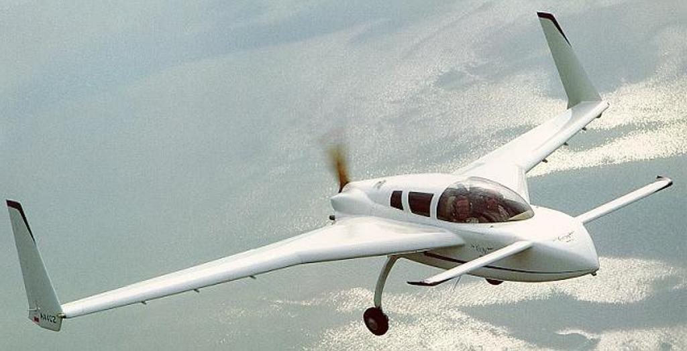
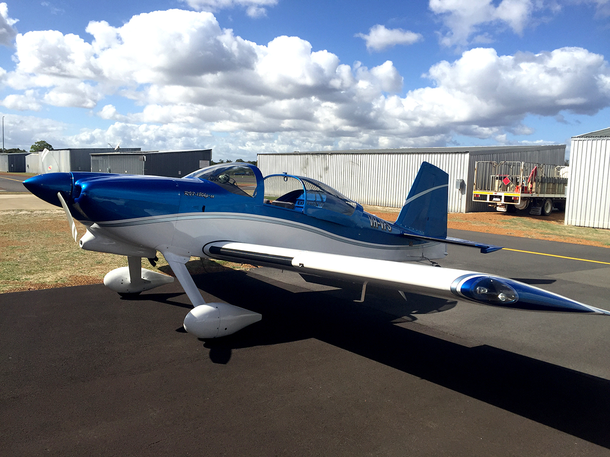

I discovered aircraft building when I was in Alaska on the ships back in 1990. Those guys have eight months of winter and build all sorts of craziness to stay sane. The cold and the darkness do something to people—they either go mad or they start building aircraft in their garages. I fell into the latter camp.
At the time, I was completely fixated on building a canard of some type. The Velocity and the Cozy MkIV were the objects of obsession—pusher prop, canard surfaces up front, sleek fuselage design. I was serious enough about it that I actually purchased the Cozy plans in 2002. They're still in my basement today, rolled up and gathering dust, a monument to dreams deferred and practicality eventually winning out.

A Cozy MkIV—the canard design I bought plans for in 2002. They're still in my basement.
But then, after some actual research instead of just daydreaming, I realized that Australia was probably the wrong country for a canard. Not enough sealed runways. Too many dirt and gravel strips where a pusher prop configuration becomes a rock-eating liability. The dream died slowly, buried under the weight of operational reality and the understanding that building an aircraft you can't safely operate is just expensive garage art.
So I researched alternatives and landed on the Van's RV-7. Perfect fit for long-distance single engine work and gentleman aerobatics. It's conventional, which sounds boring until you realize conventional means proven, supported by thousands of builders, and capable of operating from the kinds of airstrips that actually exist in Australia instead of the ones I wished existed.

The Van's RV-7—what I'm actually building
Started this project in 2008, back in Rouse Hill. Got the empennage kit, opened the boxes, and learned just enough to be stupid. Riveted some parts, drilled some holes, made the classic beginner mistakes. Then we moved from Rouse Hill to Galston and the project never made the transition. It got mothballed, shoved into storage, and forgotten for the better part of a decade.
Fast forward to 2023. Reordered the empennage kit and committed to actually restarting. Turns out I jumped the gun—kids were still front and center, time was scarce, and the restart never gained traction. But now, finally, I'm getting back to it. Slowly. Very slowly. Kids are older, life is more predictable, and I've got a few hours here and there to actually make progress.
These pages document my progress and, at times, the seeming lack of it. I'm still building out my shop, still working on a workflow that doesn't involve three hours of tool hunting before I can start actual work. But this page is helping keep it going. Public documentation creates accountability. When you know people can see whether you're making progress or just making excuses, it changes the calculus.
Check back regularly to see if anything has happened. Sometimes it will. Sometimes it won't. But it'll all be here, timestamped and honest.